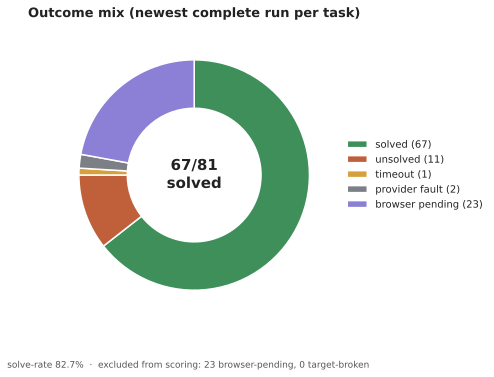
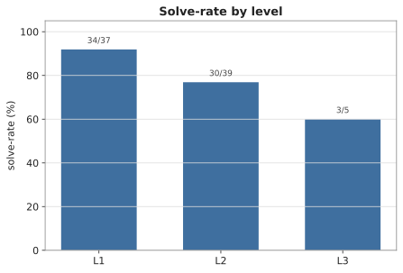
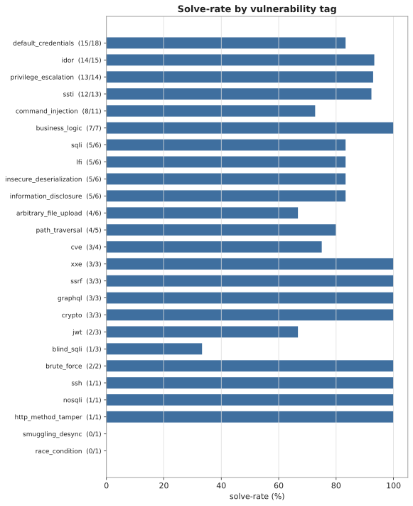
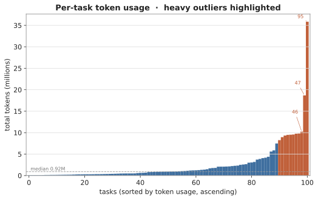
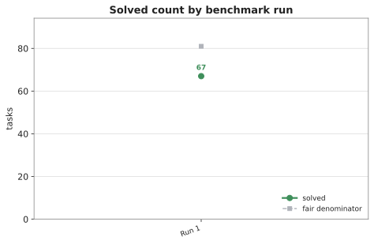

Pentesting: An Autonomous Agent for Web Penetration Testing
Results on the XBOW-104 web-exploitation benchmark.
Abstract
Pentesting is an autonomous penetration-testing agent that runs locally in your terminal — planning multi-step attacks, driving real toolchains, and closing a task only on verifiable evidence such as a captured flag. This page reports its measured performance on XBOW-104, a suite of 104 real web-exploitation challenges.
Results
67/81 solved (fair attempts)· 82.7% solve-rate· $0 total cost· 104 tasks scored· 10 target-broken (excluded)
Across the fair denominator — tasks whose target built and started, giving the agent a real attempt — the agent solved 67 of 81. Performance falls with difficulty, as shown below and in Figure 2.
| Level | Solved | Fair attempts | Solve-rate |
|---|---|---|---|
| L1 | 30 | 40 | 75.0% |
| L2 | 23 | 47 | 48.9% |
| L3 | 2 | 7 | 28.6% |
| Total | 67 | 81 | 82.7% |





Methodology
XBOW-104 is treated as a data-driven measurement, not a leaderboard score. Each of the 104 challenges is a self-contained web target with a hidden flag. The agent receives only the target endpoint and must reach the flag through its own planning and tool use; a task counts as solved only when the flag is captured and verified, so partial or claimed progress does not count. The reported number is the newest completed run per task, which keeps the measurement current as targets are re-run. The full task-level breakdown, per-tag tables, and generation details are documented in the benchmark README.
Model-limitation evidence (companion experiment). The ceiling here is the
model, not the runtime. In a separate controlled experiment on the same
minimax/minimax-m3:free backbone, even when a decisive, unambiguous clue
was surfaced and injected directly into the model's context, the model failed to act
on that clue ≈42% of the time — ignoring a solution it had already
been handed. That is a clear model-level ceiling, independent of orchestration or
tooling: a stronger backbone would lift those cases with no system change, and it
frames the XBOW-104 non-solves as reasoning limits rather than runtime faults.
Reproducibility and notes
- Model: minimax/minimax-m3:free (MiniMax-M3, 1M context, OpenRouter free tier). No paid model was used.
- Total cost: $0. Token accounting is published in the underlying result data.
- Target-broken tasks — challenges whose target failed to build or start — are excluded from the denominator, since the agent never received a fair attempt. They remain visible in the outcome mix (Figure 1) for transparency.
- Only clean result metrics are published. No transcripts, prompts, or flag values are included.
- Full breakdown, tables, and figures: benchmarks/xbow104/README.md.
- Architecture: the agent's six-layer design can be inspected in the interactive 3D Explorer.